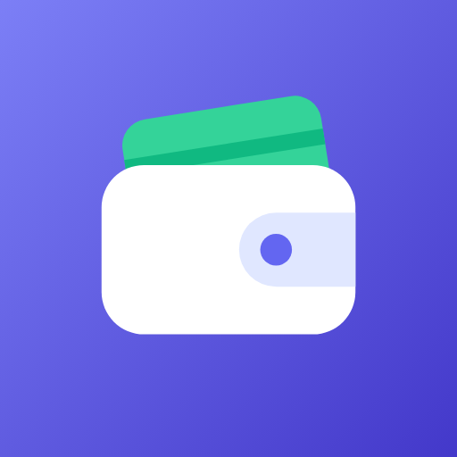

Política de privacidad de MiGasto
Última actualización: 6 de octubre de 2026 · English below
Resumen
MiGasto es una app para apuntar gastos, ingresos y facturas, en solitario o en grupo. No mostramos publicidad, no vendemos tus datos y no usamos herramientas de analítica ni de seguimiento. Solo guardamos lo necesario para que la app funcione.
1. Qué datos se tratan
La app puede funcionar de dos formas:
- Modo local (sin cuenta): todo lo que introduces (tu nombre, grupos, movimientos y fotos de tickets) se guarda solo en tu dispositivo. No se envía a ningún servidor. Si tienes activada la copia de seguridad de Android, el sistema puede incluir estos datos en la copia de tu cuenta de Google, bajo tu control.
- Modo nube (con cuenta): para sincronizar y compartir grupos se guardan en servidores de Google Firebase:
- Datos de la cuenta: tu email, tu nombre y una contraseña cifrada (gestionada por Firebase Authentication; nunca vemos tu contraseña).
- Datos financieros que introduces: importes, descripciones, categorías, fechas, cuenta (banco/efectivo) y quién añadió cada movimiento.
- Fotos de tickets que decidas adjuntar (opcional), comprimidas.
- Grupos: nombre, icono, código de invitación y la lista de miembros (nombre y email).
La app no accede a tus cuentas bancarias, contactos, ubicación ni a otros archivos. La cámara y la galería solo se usan cuando tú eliges adjuntar una foto, mediante el selector del sistema.
2. Para qué se usan
- Mostrarte tu saldo, tus movimientos, el calendario y las estadísticas.
- Sincronizar tus datos entre dispositivos y con los miembros de tus grupos.
- Permitirte iniciar sesión y recuperar tu contraseña.
No se usan para publicidad, perfiles comerciales ni decisiones automatizadas.
3. Quién puede verlos
- Los datos de un grupo solo los ven sus miembros. Para entrar en un grupo hace falta su código de invitación, y las reglas de seguridad del servidor impiden el acceso a cualquier otra persona.
- Google Firebase (Google LLC / Google Ireland Ltd.) actúa como proveedor de alojamiento y autenticación por cuenta del responsable de la app. Más información: privacidad en Firebase.
- No compartimos ni vendemos datos a terceros.
4. Seguridad
Las comunicaciones van cifradas (HTTPS/TLS) y los datos se almacenan cifrados en los servidores de Google. El acceso está limitado por reglas de seguridad que solo permiten a cada usuario leer y modificar los grupos de los que es miembro.
5. Conservación y eliminación
- Los datos se conservan mientras tengas la cuenta.
- Puedes eliminar tu cuenta en cualquier momento desde Ajustes → Eliminar mi cuenta permanentemente. Se borran tu cuenta y tus credenciales, y sales de todos tus grupos (tu nombre y tu email desaparecen de la lista de miembros); los grupos en los que eras el único miembro se borran con todos sus movimientos y fotos.
- Los movimientos que añadiste a grupos compartidos con otras personas se mantienen en esos grupos, porque forman parte de las cuentas comunes, y siguen mostrando como autor el nombre que tenías. Cualquier miembro puede borrarlos.
- Si ya no tienes la app, consulta cómo solicitar la eliminación de tu cuenta.
- En modo local, basta con usar Ajustes → Borrar todos los datos o desinstalar la app.
6. Tus derechos
Puedes acceder a tus datos y exportarlos (Ajustes → Exportar movimientos), corregirlos o borrarlos desde la propia app. Si resides en la UE, también tienes derecho de oposición, limitación y portabilidad, y a reclamar ante la autoridad de control (en España, la AEPD).
7. Menores
La app no está dirigida a menores de 13 años y no recoge conscientemente datos de menores.
8. Contacto y cambios
Para cualquier consulta sobre privacidad escríbenos al email de contacto que figura en la ficha de MiGasto en Google Play o abre una consulta en github.com/Chiiraac/Migasto/issues. Si cambiamos esta política, actualizaremos la fecha de arriba.
English summary
MiGasto lets you track expenses, income and bills, alone or in shared groups. There are no ads, no analytics and no tracking, and we never sell data.
- Local mode: all data stays on your device.
- Cloud mode: your email, name, the transactions you enter, optional receipt photos and your groups are stored in Google Firebase so they can be synced and shared with the members of your groups only. Data is encrypted in transit and at rest.
- You can delete your account at any time in Settings → Delete my account permanently, or follow these steps. Transactions you added to groups shared with other people remain in those groups, still showing the name you had as their author; groups where you were the only member are deleted.
- Contact: the developer email shown on the Google Play listing, or GitHub issues.